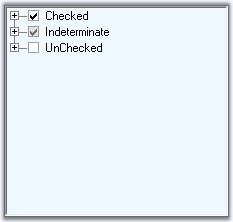
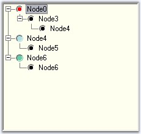
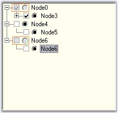

Adding Checkbox to the Nodes
The ShowCheckBoxes property when set will display check box for all the nodes. To apply checkbox to individual nodes, set the TreeNodeAdv.ShowCheckBox property, only for the required nodes in the NodeCollection Editor.
The InteractiveCheckBoxes indicates whether the state of the parent node's checkbox is based on the checkstate of it's child nodes checkboxes. To set this for individual nodes set the InteractiveCheckBox property of the TreeNodeAdv.
|
TreeViewAdv Property |
Description |
|
ShowCheckBoxes |
Indicates if the checkbox will be shown for the nodes. |
|
InteractiveCheckBoxes |
Indicates if the state of the node's checkbox indicates the checkstate of the child node's checkboxes. |
|
TreeNodeAdv Property |
Description |
|
ShowCheckBox |
Indicates if the checkbox of the node is visible. |
|
InteractiveCheckBox |
Indicates if the node will have an interactive checkbox. |
 Note: On Changing the checkstate of the
checkbox, AfterInteractiveChecks event will be
triggered.
Note: On Changing the checkstate of the
checkbox, AfterInteractiveChecks event will be
triggered.
Tristate CheckBox Settings
In the TreeViewAdv, the partial checking of the child nodes are supported. They are Checked State, Unchecked State and Intermediate State.
The CheckColor and CheckState property is used to set the color and the state of the check mark of the particular selected node. The options for the CheckState property are Checked, Unchecked and Indeterminate.
|
TreeNodeAdv Property |
Description |
|
CheckColor |
Indicates the color of the check mark. |
|
CheckState |
Indicates the check state of the node. |
|
IntermediateCheckColor |
Indicates the color of the check mark when it is in intermediate state or when its CheckState property is set to indeterminate. |
|
Checked |
This indicates if the node's checkbox is checked. |
|
EnsureDefaultOptionedChild |
This specifies if at least one child of the parent node should be selected at all times. |
|
[C#]
treeNodeAdv8.CheckColor = System.Drawing.SystemColors.ControlDarkDark; treeNodeAdv7.CheckState = System.Windows.Forms.CheckState.Indeterminate; treeNodeAdv8.EnsureDefaultOptionedChild = true; treeNodeAdv8.Checked = true; |
|
[VB.NET]
TreeNodeAdv8.CheckColor = System.Drawing.SystemColors.ControlDarkDark TreeNodeAdv7.CheckState = System.Windows.Forms.CheckState.Indeterminate TreeNodeAdv8.EnsureDefaultOptionedChild = True TreeNodeAdv8.Checked = True |

Figure 1127: Tree Nodes illustrating Tristate-CheckBox
Adding Option Buttons
ShowOptionButtons property, when set, will add option buttons to all the nodes which can be applied for the required nodes alone, by setting the property for the respective nodes in the NodeCollection Editor.
|
TreeNodeAdv Property |
Description |
|
SelectedOptionButtonColor |
Indicates the color of the option button in the selected state. |
|
ShowOptionButton |
Indicates if the optionbutton of the node is visible. |
|
OptionButtonColor |
This indicates the color of the option button. |
|
Optioned |
This indicates if the node's option button is checked. |
|
[C#]
treeNodeAdv9.SelectedOptionButtonColor = System.Drawing.Color.Red; treeNodeAdv3.OptionButtonColor = System.Drawing.Color.AliceBlue; treeNodeAdv6.OptionButtonColor = System.Drawing.Color.PowderBlue; treeNodeAdv8.OptionButtonColor = System.Drawing.Color.MediumAquamarine; |
|
[VB.NET]
TreeNodeAdv9.SelectedOptionButtonColor = System.Drawing.Color.Red treeNodeAdv3.OptionButtonColor = System.Drawing.Color.AliceBlue treeNodeAdv6.OptionButtonColor = System.Drawing.Color.PowderBlue treeNodeAdv8.OptionButtonColor = System.Drawing.Color.MediumAquamarine |

Figure 1128: Customized Selected Option Buttons
Disabling a node's Checkbox or Option button
The user can disable the checkbox or the option button of a node and can still select and deselect the node by setting the EnabledButtons property to false of the respective TreeNodeAdv.
|
TreeNodeAdv Property |
Description |
|
EnabledButtons |
Indicates if the buttons that are displayed, are enabled for the particular node. |

Figure 1129: Disabled CheckBox and Option Buttons
See Also